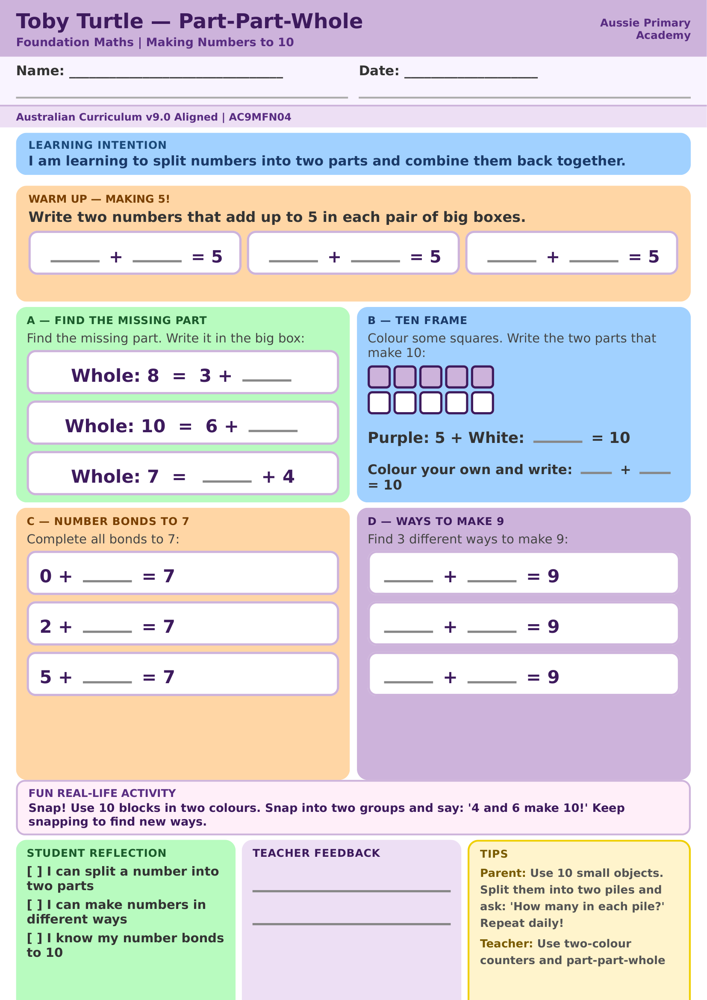

Foundation · Maths · Free Printable
Part-Part-Whole: Making 10
Explore how numbers can be split and combined.
Worksheet Preview

Learning Intention
Students explore how numbers to 10 can be split into two parts and recombined to make the whole.
Australian Curriculum
Supports Foundation Mathematics learning through flexible representations of numbers to 10.
Skills Practised
- Part-part-whole thinking
- Number relationships
- Counting and combining
About This Worksheet
This worksheet helps children see that a whole number can be made from different parts. For example, 7 can be made with 5 and 2, or 4 and 3. Seeing these relationships supports flexible number thinking and later addition and subtraction.
How to Use It
Begin with counters, blocks or small objects. Build a whole of up to 10, split it into two groups and ask the child to describe the parts. Then complete the worksheet by drawing, counting or writing the missing number. Encourage the child to explain how they know the two parts make the whole.
Parent Tip
Use everyday objects such as buttons, toys or pieces of fruit. Ask, “How many altogether?” and “What are the two parts?” Try changing one part while keeping the whole the same.